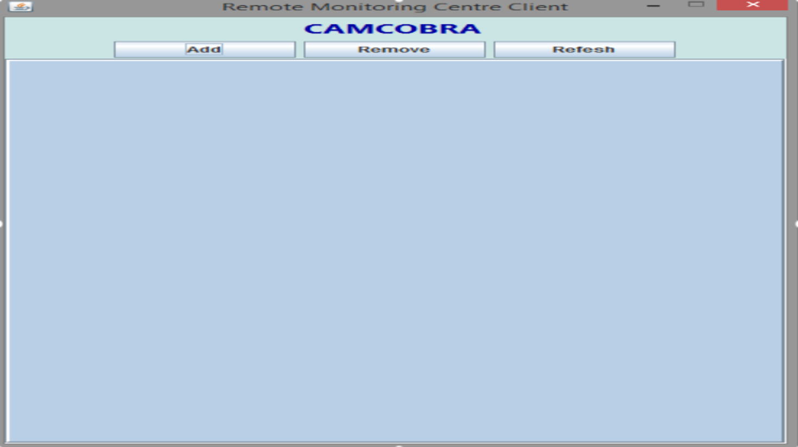
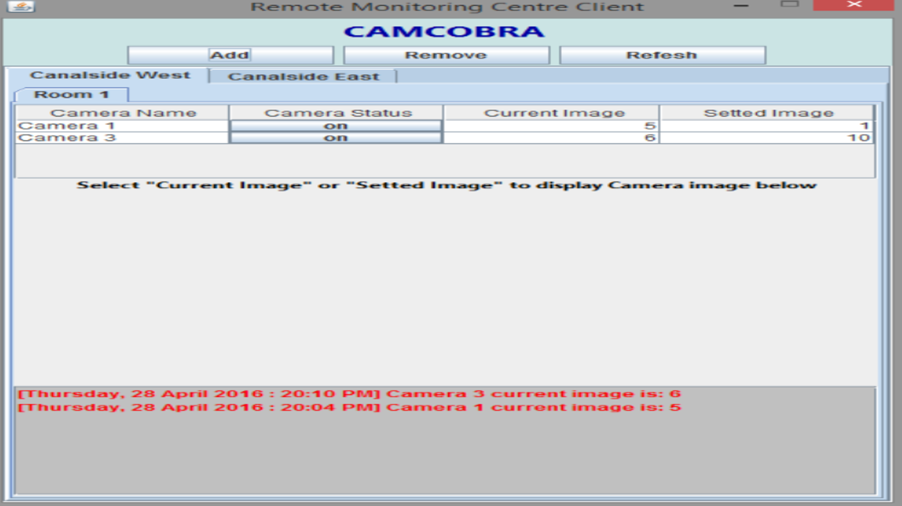

<div class="wrapper">
		<div class="fixed">
	
			<br />
			<div class="content">
				<div id="text">
					<div style='font-size: 2em; color: #4582ec; font-weight: bold; padding-bottom: 0.3em; text-align: center;'>CamCobra Project</div>
					<div id="projects">
						<div id="myCarousel" class="carousel slide" data-ride="carousel">
							
							<!-- Indicators -->
							<ol class="carousel-indicators">
								<li data-target="#myCarousel" data-slide-to="0" class="active"></li>
								<li data-target="#myCarousel" data-slide-to="1"></li>
								<li data-target="#myCarousel" data-slide-to="2"></li>
							</ol>

							<!-- Wrapper for slides -->
							<div class="carousel-inner">
								<div class="item active">
									
								</div>
								<div class="item">
									
								</div>
								<div class="item">
									
								</div>
							</div>

							<!-- Left and right controls -->
							<a class="left carousel-control" href="#myCarousel" data-slide="prev">
								<span class="glyphicon glyphicon-chevron-left"></span>
								<span class="sr-only">Previous</span>
							</a>
							<a class="right carousel-control" href="#myCarousel" data-slide="next">
								<span class="glyphicon glyphicon-chevron-right"></span>
								<span class="sr-only">Next</span>
							</a>
						</div>
						
						<div align="center">
							<ul class="list-inline idxIcons" style='font-size: 1.9em; margin-top: 0.5em;'>
								<li>
									<a href="https://github.com/FaserP/Java-CamCobra" target="_blank">
										<i class="fa fa-external-github"></i>View Code
									</a>
								</li>
							</ul>
						</div>
						
						<br />

						<div class="row">
							<div class="col-md-10 col-md-offset-1">
								<p>This is a project that was developed by using JAVA and COBRA. The purpose of this project is a system that tracks the status of cameras. For example in the example images above, you can see the application is tracking camera that are placed around the university. The system updates each time there is a change on the camera and the image taken from that camera gets updated.</p>
								<p>Camcobra was used with java to develop this system. With Cobra that supports programming models such as RMI and IDL, this allows this program to be built with using different stations to pass data along for the camera. For example this system uses LMS (Local Monitoring Station), RMC (Regional Monitoring Center) and Sensors in order for the camera system to work. Each of these stations have functionally in order to make sure the camera function correctly.</p>
								<p>The main features for this system are that each camera has a sensor device which allows the camera to be set a status, to be turned off or on or to be reset. The Local Monitoring Station allows the camera to be register to a zone and room while grabbing the status of that camera and the image. The station also keeps a track of the logs made for each camera. The Regional Monitoring Station allows the users to view each of these camera and register to them in order to get notification. </p>
								<p>This system is still being developed further by using another programming language called python. With python, the system will expand to create a web interface to allow users to register to a certain camera or room and track the status.</p>
								<p>The software and skills that were used to develop this can be seen on the below table. I have also included a github page of the coding for this system above if you wish to view.</p>

								<table class="table table-hover">
									<tr>
										<td class="col-md-3"><strong>System</strong></td>
										<td>
											<strong>Software</strong>
										</td>
										<td>
											<strong>Skills/Programming Language</strong>
										</td>
									</tr>
									<tr>
										<td class="col-md-3">Software System</td>
										<td>
											Eclipse
										</td>
										<td>
											Java Programming
										</td>
									</tr>
									<tr>
										<td class="col-md-3">Data System</td>
										<td>
											Cobra IDL
										</td>
										<td>
											Cobra (Java)
										</td>
									</tr>
								</table>

								</div>
							</div>
						</div>
					</div>
				</div>
			</div>
		</div>
